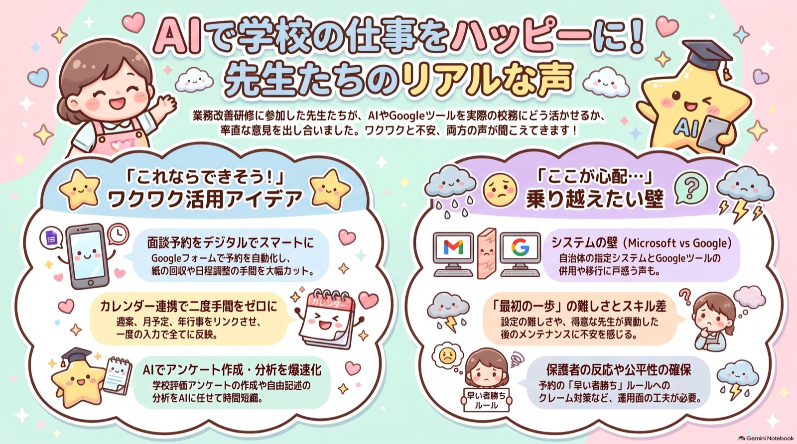

← おみやげワークのページへ ワーク①（カレンダーから週予定を書き出す）・ワーク②（学校評価アンケートの突合）・面談予約システム・スーパー記録くんの導入動画は、すべてそちらにあります。
令和8年度 茨城県県南小中学校教務主任会研修会（2026年8月20日）
「スーパー記録くん」で集まった73件を、そのままAIに読ませて整理したものです／前多昌顕
お名前は伏せてあります。グループ名に個人のお名前が入っていたものは「お名前グループ①〜⑥」に、学校名が入っていたものは「◯◯小」等に置き換えました。中身の言葉は変えていません。伏せてほしいグループ名があれば、お知らせいただければすぐに置き換えます。
暑い体育館で、最後までおつきあいいただきありがとうございました。締めの1枚のQRから、5分ほどの間に73件も届きました。ひとつも捨てずに全部AIに読ませて、下のとおり整理しました。会が終わってから数時間でこの形になっています——これ自体が、講演でお話しした「作業はAIに任せられる」の実物です。
質疑で「記録くんの結果をもっと詳しく見たい」とご質問いただいた、その結果がこのページです。講演の最後にお見せした「スーパー記録くん」に集まった音声を、そのままGemini Notebookに読ませたら何が出てくるのか。手順ではなく、出てきたものをそのまま並べてあります。投げたプロンプトは、いちばん下の「5 このページの作り方」に載せました。

講演では触れなかった用途として、外国籍の児童・保護者に向けた多言語の通知・文書づくりが複数のグループから挙がりました。県南ならではの実情だと思います。翻訳は生成AIがいちばん確実に得意な仕事のひとつなので、ここは早く効きます。
ここがいちばんありがたい部分でした。以下は、複数のグループから重なって出てきたものです。
いちばん多く挙がった不安です。市町村のデフォルトがOutlookやExcel、あるいは校務支援システムであるため、Googleのカレンダーやフォームを併用すると二重入力になる、セキュリティ制限で使えない、という声。
「支援システム・Excel・カレンダーの3か所に同じことを入力している」「市の制限でGoogleが使えない」完全に先着順で自動化すると、日中に仕事をしている保護者が不利になり、クレームにつながるのではないか——という懸念。予約開始時刻の公平性をどう担保するか、という論点です。
「即時に予約が決まってしまうと、教員側の調整の余地がなくなる」兄弟姉妹が同じ学校にいる場合の連続枠、特定の保護者同士の間隔を空けたい、といった細かい調整をシステム上でどう扱うか。大規模校ほど切実、という声でした。
「得意な人が作った仕組みは便利だが、その人が他校に異動したあと誰が直すのか」。使い方の平準化をどうするか、という維持管理の問題です。
「一度作れば後が楽になる仕組みにしたいが、属人化が怖い」「ついていけなかった」「キャパオーバーだった」「画面の情報量が多かった」。グループ名そのものが「チームついていけなかった」だった班もありました。これは完全に話し手の側の問題です。申し訳ありませんでした。だからこそ、このページと動画を置いてあります。涼しいところで、ゆっくり試してください。
講演でお伝えしたことを、もう一度だけ。まずは学校全体を変えようとしないでください。自分の仕事の、誰にも迷惑がかからないところだけを自動化する。そこで生まれた余白で、はじめて学校全体のことを考える。順番が逆だと続きません。
いただいた73件を、グループごとに66行へ整理した表です（同じグループ名で複数回送っていただいたものは1行にまとめました）。他の学校が何に困っていて、何から手を付けようとしているかが見えます。自校と同じ悩みのグループを探してみてください。
| グループ | 現状・課題 | 使ってみたいもの | 壁・懸念 | めざす姿 |
|---|---|---|---|---|
| 龍ケ崎グループ1 | 同じ内容を支援システム、Excel、カレンダーなど3か所に重複入力しており手間がかかっている。 | Gemini、音声入力、メールからのスケジュール自動抽出、Googleフォーム作成。 | 重複入力の煩雑さ、AIを使いこなすための操作習熟。 | 1回の入力で全システムへ同期し、転記作業を削減して余白を生む。 |
| 元気百倍アンパンマン＆いたずら大好きバイキンマン | アンケート結果の集約が手作業で非常に面倒。ベテラン教員にも分かりやすく整理する必要がある。 | 文字起こし分析、スプレッドシートでのAI活用、面談計画・通知の自動印刷、フォーム回答の自動集約。 | 自分で設定・運用できるかという不安、IT不慣れな教員への配慮と共有の難しさ。 | 集約作業の自動化、面談準備や書類作成事務の効率化。 |
| お名前グループ① | 面談予約の調整に時間がかかる（フォーム回答を手動で組み合わせている）。早い者勝ちによる不公平感。 | Gemini（アンケート作成、テキスト化）、面談予約の自動化ツール。 | 保護者からのクレーム（仕事中の人が不利等）、即時予約決定への抵抗（教員側の調整余地）。 | アンケート作成の簡略化、面談日程調整の自動化による時間削減。 |
| お名前グループ⑥ | 三者面談の予約調整やアンケート作成の事務負担、プロンプト作成能力の不足。 | Googleフォーム（面談予約）、Gemini Notebook、Gemini（アンケート項目修正）。 | 教員のITスキル差、少人数学級での導入コストに対する迷い。 | 担任の負担軽減（10分でも短縮）、校務の質向上、事務作業の効率化。 |
| チームついていけなかった | AIの進化や活用スピードについていけず、業務負担が大きい。重要性は理解しているが活用が追いつかない。 | AIによる文章・週案作成、面談予約システムの自動化、AIによる代筆。 | システム構築の技術的な壁、学校全体への定着・浸透における周囲からの反発。 | 業務の改善・軽減、定時退勤の実現。 |
| グループ1 | 紙ベースの業務（面談予約・連絡・週案）が多く二重の手間が発生。ICT導入への反対意見や保護者への伝達不足。 | Googleフォーム（面談予約）、Gemini、Googleカレンダー、スクリレ（連絡ツール）。 | ICT活用への根強い反対意見、紙文化を好む層の存在、操作や集計・振り分け方法への不安。 | 面談予約の効率化、校務負担の軽減、業務のデジタル化によるスピード向上。 |
| 12グループ | 面談予約での兄弟関係の調整、週案作成の負担。MicrosoftとGoogle環境の混在による制約。 | 面談システム、Gemini Notebook、AIによる週案作成、Googleツールの再利用機能。 | 兄弟のスケジュール調整の難しさ、学校現場におけるGoogleツールの利用制限。 | 面談予約の効率化、週案作成の自動化・効率化。 |
| ◯◯小には土俵がある | 外国籍の保護者が多く紙のやり取りが困難。共働き家庭との面談予約調整（早い者勝ち管理）が難しい。 | 面談予約システム、多言語対応の案内作成。 | 予約開始時間の公平性確保、外国籍保護者への対応の難しさ。 | 教員・保護者双方の利便性向上、面談調整の効率化、多言語によるスムーズな連携。 |
| 利根・守谷組 | 保護者面談の予約調整（時間の重複、希望の集中、兄弟姉妹の連続性配慮）が困難。 | GAS（Google Apps Script）を活用した面談予約システム。 | 公平性の問題、兄弟枠の自動調整などの高度なカスタマイズの可否。 | スマホ予約による利便性向上、集計業務の簡略化、柔軟な時間調整。 |
| たけまる（仮） | 自治体によって導入ツール（Microsoft／Google）が異なり、研修内容を自校で再現しにくい。 | Gemini等のAI機能、自治体間でのツール統一。 | 所属自治体でGoogleが未導入、Microsoftとの仕様差による技術的な混乱。 | ツール統一による業務効率化、研修内容を即座に実務へ反映できる体制。 |
| 千千千グループ | 週の予定入力が煩雑（Excelからスプレッドシートへの転記）。視認性と手間の課題。 | APIを活用したアプリ開発、Googleカレンダーへの情報集約、入力インターフェース作成。 | プログラミング（GAS等）の学習コスト、情報の集約先（カレンダーかシートか）の選択。 | 入力作業の効率化、情報の統合管理、操作性向上による負担軽減。 |
| ピザ食べたい | 校務システムと週案への二重入力が発生している。 | Googleカレンダーと校務システムの連携、AIによる自動転記・入力代行。 | デジタルファイル間、あるいは紙媒体への反映・連携における技術的仕様。 | 二重入力の負担解消、転記作業の自動化による業務効率化。 |
| 藤南学区 | 予定変更時に紙の週案や予定表を個別に書き直す二度手間が発生している。 | Googleカレンダーとの連携、予定表の自動更新・共有。 | 新しいツールの使い方を覚えることへの心理的・時間的負担。 | 1か所の修正が全てに反映される効率化、ツールに任せることによる負担軽減。 |
| スーパースーパーとりでくん | 面談予約後の教員側の都合（空き時間確保）や、大規模校における兄弟関係の調整が難しい。 | 面談予約システム。 | 教員側での時間入れ替えや、複雑な調整がシステム上で可能かどうか。 | 効率的な面談スケジュール管理と調整業務の負担軽減。 |
| 夏祭りグループ | 学校評価アンケートと方針の照らし合わせ、資料作成の負担。 | Canva、Gemini Notebook、アンケート分析・方針照合。 | — | 資料作成の迅速化、アンケート分析業務の効率化。 |
| かっぱのキューちゃん | 学校評価アンケートの分析、整合性の確認、作成管理。 | Gemini、Gemini Notebook（アンケート整合性確認）。 | — | アンケート業務の効率化と精度の向上。 |
| つくばつくばつくばつらい | 業務量がキャパオーバーで自身の技能も不足している。校務システムとの併用課題。 | AIの練習、音声（MP3）の活用、Googleツール。 | 操作や活用のための技量不足、スキルの欠如。 | 夏休み中のスキルアップ、システム併用による業務の使いこなし。 |
| 26グループ | 校務システムとGoogleカレンダーの連携、セキュリティ制限による場所の制約。 | Googleカレンダー、面談予約システム、写真撮影によるデータ入力自動化。 | セキュリティ上の制約、手動でのデータ流し込みの手間。 | スケジュール管理の一元化、入力作業の簡略化・自動化。 |
| TMN | Microsoft環境を使用。AIを活用しない非効率な業務や、自身のアレンジ方法に苦慮。 | Gemini、Googleカレンダー、アンケートの作成・集約・分析。 | Microsoft環境からの移行、AI活用が進まない教員への浸透。 | アンケート分析等の効率化、スキル向上。 |
| グループA2 | 行事計画や週案をExcelからのコピペで作成しており、連携の手間がかかる。 | 行事計画・月予定・週案の自動連携（リンク）、Google関連ツール。 | Microsoft製品からAI活用に適したGoogle環境への移行・適応。 | 市の方針の迅速な反映、書類作成の効率化。 |
| 29のグループ | AIの仕組みやコード作成が自力では困難。Microsoft環境メインでGoogleを未活用。 | AIによるコード生成、Googleフォーム、スプレッドシート拡張機能。 | 導入手順の難易度、スプレッドシートへの移行に対する心理的・技術的障壁。 | 自分でやり方を考えず、AIに任せることによる業務改善。 |
| チームどーほー | グループワークの対話評価において、発言内容を把握しきれずプリントのみの評価になっている。 | 録音・録画機能（AIによる要約・まとめ）。 | — | 子どもたちの対話内容の振り返り、評価業務の効率化。 |
| 小中合同グループ | AI未活用。外国籍の児童・保護者対応で本国言語の文書作成が必要。 | 翻訳機能、業務全般に活用可能なAIツール。 | AIに対する信頼性（使い始める段階）。 | 多言語対応の円滑化、および業務全般の効率化。 |
| 明けゆく常陸_うれし | 文章で届く予定情報をExcelに手入力しており、手間とミスのリスクがある。 | Googleカレンダーとの連携、文章読み込みによる自動予定反映。 | 最初の設定・準備にかかる時間、システム変更への負担感。 | 準備時間の短縮、入力ミスの解消、業務の効率化。 |
| 龍ケ崎B | 特定の担当者に依存したシステム運用（属人化）への懸念。 | Googleツール（横展開が可能なもの）。 | 作成者が異動した後のメンテナンス、使い方の平準化。 | 業務の平準化、一度作成すれば後が楽になる仕組みの構築。 |
| ちべんわかやま | 教務主任としての業務過多により、退勤時間が遅い。 | ICTの活用（全般）。 | ICT支援員の不足、人材不足、現状の業務量。 | 定時退勤（5時〜5時半）の実現、業務負担の軽減。 |
| もりヤーズ | 文化祭の分析業務や手動の連絡業務が負担。 | スーパー記録くん、面談システム、拡張機能（アプリ実行等）。 | 課金の必要性、システム拡張に関する技術的な設定。 | 行事分析の迅速化、面談予約の自動化。 |
| あみグループ | 既存のExcel等は整っているが、生成AIの活用は未着手だった。 | 生成AI（Gemini等）への相談、Googleカレンダー。 | 既存システムとの使い分け、新しいツールの導入判断。 | 生成AIへの問いかけによる、想像を超えた業務効率化の実現。 |
| かしわもち | Microsoft環境（Outlook等）でのカレンダー連携が可能か不透明。 | カレンダー連携機能、Microsoft Copilot、Googleツール。 | 自身のMicrosoft環境でGoogle系機能が同様に使えるかという不安。 | 帰宅後のカレンダー連携機能の活用。 |
| お名前グループ⑤ | 生成AIへの心理的ハードルがあり、活用できていなかった。 | 生成AI（全般）。 | 活用への心理的ハードル。 | 今後の業務効率の向上。 |
| 迷える子羊 | グランドデザイン変更に伴う学校評価項目の作り直し。 | Gemini（学校評価項目作成）、Googleツール（面談予約）。 | — | 大変な作業の自動化、他校事例の取り入れ。 |
| にいはりれんこん | スケジュール機能の活用が難しいと感じている。 | 保護者アンケート・面談予約、週案・月案の合体機能。 | 操作難易度。 | 事務作業（週案等）の効率化、AI実践の着実な進展。 |
| 県南卓球専門部 | GoogleとMicrosoftのツール間連携がうまくいかない。 | 面談予約機能、Microsoftツールとの連動。 | システム間の連携の難しさ、Microsoftアカウントの活用方法。 | プラットフォームを跨いだスムーズな連携、利便性の向上。 |
| ニラレバ定食ニラレバ抜き | 操作画面の情報量が多く、説明のスピードについていけない。 | 提供資料に基づく興味深い機能（全般）。 | 画面の複雑さ、リテラシーの課題、説明スピードへの追随。 | 資料を活用したツールの習得と実務への活用。 |
| 44のグループ | 予定の見通しが立てにくい。市の制限によりAI活用に制約がある。 | カレンダー機能を活用した予定管理、年間計画と週案のリンク。 | 自治体のセキュリティ制限・使用制限、技術的な制約。 | 予定の見通し確保、業務の効率化。 |
| 朝ごはん納豆、キーマカレー | 情報の集約化が不十分。 | Gemini Notebook、Googleカレンダーによる情報の一元化。 | — | 情報の一元管理による業務効率化。 |
| ｈｂｖｊｆｈしおうｓｄｆひお | 予定をアナログ（手帳）で管理しており、書く作業が大変。 | Googleカレンダー、週予定と月予定の統合機能。 | — | 手書き負担の軽減、デジタルでの統合管理。 |
| のんたん | 面談予約の早い者勝ちシステムによる不公平感。 | AIによる面談自動振り分け機能、資料作成・共有。 | クレームの懸念。 | 面談調整の自動化、資料活用による確認の容易化。 |
| お名前グループ③ | ICTが苦手で説明の理解が追いつかない。カレンダー連携も未着手。 | 学校評価アンケート、面談日程作成、Googleカレンダー連携。 | 技術不足、苦手意識。 | 同僚から学びつつ、アンケートや日程管理を効率化する。 |
| お名前グループ④ | Googleカレンダー活用に困難を感じている。 | 学校評価アンケートのまとめ機能。 | 操作への習熟不足。 | アンケート集計・まとめ業務の効率化。 |
| 県南のすみっコから | 手順が難しいものが多く、活用が一部に留まっている。 | Gemini（より良い使い方、具体的な手順習得）。 | 操作手順の難易度。 | 実践的な活用方法を学び、少しずつ取り入れる。 |
| チームついていけなかった（個人） | 記録業務の負担、記録の振り返り。 | 記録用AIツール（スーパー記録くん）、入力情報の文字化・振り返り機能。 | コスト面（無料かどうか）、使い勝手の確認。 | 記録業務の効率化、入力内容の自動振り返り。 |
| グループH | Googleカレンダーを十分に活用しきれていない。 | Googleカレンダーの有効活用。 | 技術・知識の不足。 | できるところから活用を始め、業務時間を短縮する。 |
| グループフルート | 事務作業（手打ち等）に時間を取られ、業務上の余白がない。 | AIを活用した文章作成、Googleフォーム。 | AI操作への不慣れ（慣れる必要がある段階）。 | 事務作業を効率化し、時間に余白を作ること。 |
| わかりやすい名前 | 内容が難しく、現在の業務への取り入れ方に限界を感じている。 | 具体例として示された機能。 | 内容の難易度、現場活用の限界。 | AIでできる可能性を探り、実務に反映させる。 |
| 冷房体育館大好き！ | 研修スピードが速く、内容についていけなかった。 | — | 操作・説明スピードへの不安。 | 復習による理解、仕事への意欲向上。 |
| お名前グループ② | 学校アンケートの処理負担。 | 学校アンケートへのAI活用。 | — | アンケート業務の効率化と他業務への展開。 |
| 沖縄行きたい | アンケートのフォーム作成時、手打ち作業が面倒。 | AIを活用したアンケート作成機能。 | 操作の難しさ。 | 手打ち作業の解消、実務での実践。 |
| 本能寺の変 | AIツールの使い方がよくわからない。 | Gemini Notebook。 | 知識不足。 | アウトプットへの活用、まずは使い始めること。 |
| がんばります | 面談のスケジュール調整負担。 | Googleカレンダー（予約機能）。 | 保護者の入力ミスへの懸念。 | 担任の負担軽減（楽になること）。 |
| TEAM_いなのすけ | 学校行事と私事の調整、子どもの実態把握。研修画面が小さく見づらかった。 | Googleカレンダー一括管理、フォーム自動作成。 | 研修環境による情報の受け取りにくさ。 | 公私のスケジュール管理の効率化、実態把握の深化。 |
| あいうえおグループ | 発言内容の集約。 | 音声の文字起こし機能。 | — | 校内でのAI活用試行。 |
| 50グループ | 文字起こしデータの活用。 | 入力情報の文字化・振り返り機能。 | — | 入力内容の自動振り返り。 |
| 個人（Microsoft利用） | Google環境での再現性を模索。 | Googleカレンダーへの予定同期。 | ネットワーク接続環境。 | 予定管理の自動化・効率化。 |
| ナエバ | 情報共有やスキル習得の場の不足。 | 行政主導によるIT・AI研修。 | 行政レベルでの研修体制の不足。 | 教職員全体の活用レベルの底上げ。 |
| 旧みどりの力 | ツールが統一されていないことによる非効率。 | Googleカレンダー、Googleツール全般。 | 組織全体での導入、全員が使いこなせるか。 | 業務の簡略化、異動時の負担軽減。 |
| さくらがわ・あずま | 業務負担の軽減が必要。 | AI全般。 | — | 業務の削減、困難な課題の解決。 |
| QurviA（クルヴィア） | 面談予約シートでのトラブル発生。 | 面談予約シートの作成。 | — | トラブル回避とスムーズな運用。 |
| KSG | Googleカレンダーとの連携不備。 | Googleカレンダー（AI連携）。 | 接続・設定上の問題。 | 業務の利便性向上。 |
| 八郷 | 既存のシステム（デフォルト）がある。 | 今日の研修内容。 | 既存環境との兼ね合い。 | — |
| しんとね | ICT活用への苦手意識。 | — | 操作への不安、習熟への努力。 | — |
| あいうえお | — | 本校での試行。 | — | — |
| みらい市 | 新しいツールへの抵抗感。 | — | インターフェースへの慣れ。 | 導入の円滑化。 |
| おばみな | 校務システムとGoogleの併用。 | — | 二つのシステムの使い分けの困難さ。 | — |
| リアップX5X5 | 情報不足。 | — | — | 研修内容の活用。 |
| 我々のコリブリ | — | — | — | AIが重要なアイテムであるという認識。 |
※ 表は、いただいた音声・テキストをAIが要約したものです。同じグループ名で複数回送っていただいたものは1行にまとめています。言い回しはAIの整理によるもので、発言そのままではありません。
タネ明かしです。手順はこれだけでした。
講演でお話しした「AIの使いどころは作文ではなく、突合と転記」が、まさにこれです。73件を人間が聞き取って分類したら、丸一日仕事でしょう。校内研修の感想、学校評価アンケートの自由記述、行事の反省——全部これでいけます。
使ったアプリと手順は、おみやげワークのページにすべて置いてあります。スーパー記録くんの導入動画もそちらです。